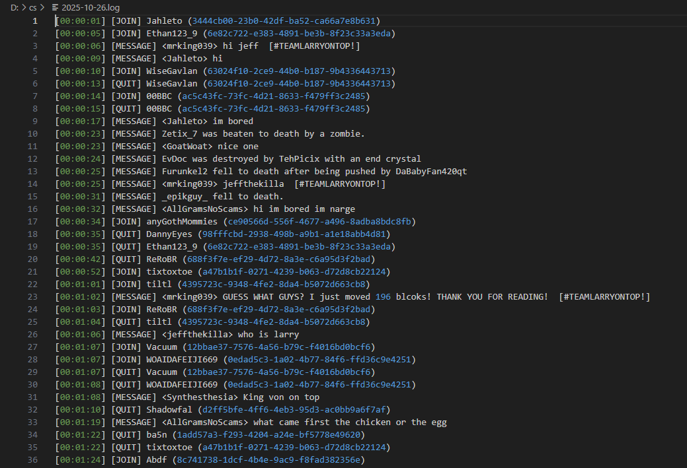

🛠️ For Engineers: Review the Documentation on GitHub.
View Repo →
MooBot
moooomoooo is a minecraft server bot first created in December 2019, that has been running almost non stop for the past 6 years. with more than 100 commands, a database size of 50GB saving player data for more than 1.5 million Minecraft players and over 100 million messages.Main commands
Note: commands have a 5 second cooldown per user
!help - Get a help menu
Database Player Statistics
NEW
!bedrock
Find out how many bedrock players have joined.
NEW
!joins or !quits
Check how many times someone has joined or left (extracted from logs going back to 2021)
NEW
!clout / !wordcount / !wc / !word PHRASE
Find out how many times a word/message has been said on the server!!!
NEW
!firstdeath / !fd PLAYER
See your first death message (Death messages have been extracted from logs and now go back to 2021!!)
NEW
!firstkill / !fk PLAYER
See your first kill message (Death messages have been extracted from logs and now go back to 2021!!)
NEW
!lastdeath / !ld PLAYER
See your last death message (Death messages have been extracted from logs and now go back to 2021!!)
NEW
!lastkill / !lk PLAYER
See your last kill message (Death messages have been extracted from logs and now go back to 2021!!)
NEW
!randomdeath / !rd PLAYER
See a random death message (Death messages have been extracted from logs and now go back to 2021!!)
NEW
!randomkill / !rk PLAYER
See a random kill message (Death messages have been extracted from logs and now go back to 2021!!)
NEW
!data PLAYER
Download all of you or someone elses data and messages!
UPDATED
!top [NUMBER] [nword(s)/playtime/pt/deaths/kills/nolife/messages/joins/leaves] [hard/soft]
Added nolife, messages, joins, leaves - now possible to change number
UPDATED
!onlinetop / !ot / !otop [NUMBER] [nword(s)/playtime/pt/deaths/kills/nolife/messages] [hard/soft]
Added nolife - Players with the highest stats that are currently online
UPDATED
!quote [PLAYER] [PHRASE]
Get a random message someone has said! Now a phrase can be added! Change player name to bedrock for random
bedrock quote.
NEW
!newplayers 30d ago
Shows amount of new players that joined before a certain time/date.
NEW
!nolife
Find out how much of your life was wasted playing the server, starting from firstjoin. It uses playtime
divided by total time since first join. Also tells you the average time per day wasted. Command also useful
for seeing moobots lifetime uptime.
!nwordcount / !nwords - !nwordcount [PLAYER] or total
check how many nwords the player has said.!firstwords
First message the bot has saved from player!lastwords
Last message the bot has saved from player!seen / !lastseen
Last time the bot has seen someone online. Also tells you how long someone has been online if they are logged in. (inaccurate if bot has disconnected while they were online)!firstseen / !jd / !joindate
First time the bot has seen someone online. - (Firstseens previously inaccurate or missing from July 10th, 2021, and before December 21st, 2021 have been fixed)!playtime or !pt
Get you or someone elses playtime.!kd or !kills or !deaths
Works on nearly all servers, it checks for usernames in messages!messages
Get total messages the bot has saved from a player. (No arg will show the total messages stored on server)!savemsg
Save a message to be played back later with !playmsg!playmsg
Play a message you saved from !savemsg!iam
Tell the bot who you are!whois
See who people are!uuid
Find a minecraft player's uuid (if server is cracked, will only show name)Online Player Statistics
NEW
!players - ONLY WORKS ON DISCORD
Total number of players and a list of current players online. In game, it shows the total amount of players
that the bot has saved data for.
NEW
!bestjitter or !bestj [MINUTES]
Get players with lowest jitter.
NEW
!worstjitter or !wj [MINUTES]
Get players with highest jitter.
UPDATED
!ping
Get ping of yourself or someone else. Now shows jitter!
!bestping or !bp
Get players with lowest ping.!worstping or !wp
Get players with highest ping.Offline Messaging System
UPDATED!
!offlinemsg / !om / !offlinemessage / !omsg
Save a message for someone and moobot will send them the message once they are online. NOW SUPPORTS UP TO 6
MESSAGES/2 PER AUTHOR!
!ignore
prevent someone from !offlinemsging you.!unignore
allow someone to !offlinemsg you.InGame Bot Commands
NEW
!mount
Mount any boat or minecart within 5 blocks of the bot. Warning: Anyone can find the coords of the bot, don't
bring it to your base!!!
NEW
!dismount / !unmount
Dismount from the boat or minecart.
UPDATED!
!time
Time in ticks, and NOW tells you how long until you can sleep.
UPDATED!
!sleep
Tells you if you can sleep or not and NOW tells you how long until you can sleep.
!radius
Get all players and coordinates in radius of bot.!coords
Coords of the bot!kill / !killbot
Kill the bot.!tps
Check tps of server - NOT ACCURATE (THIS IS APPROXIMATE. IT PROBABLY ISN'T THE RIGHT NUMBER.)!discord
Get discord invite for chat bridge!health
Health and food level of bot!runtime / !uptime
Uptime of botWeb API Commands
NEW
!grok / !elon / !xai
Use !grok reset to reset - Ask Grok a prompt and respond with the bot
NEW
!gemini / !google
Use !gemini reset to reset - Ask Google Gemini a prompt and respond with the bot!
NEW
!pirate QUERY
Search the pirate bay!
NEW
!tor QUERY
Search the dark web! (Uses the ahmia search engine) What could possibly go wrong...
UPDATED!
!chatgpt / !gpt / !ai
Now supports message history! Use !gpt reset to reset - Ask chatgpt a prompt and respond with the bot
UPDATED!
!deepseek / !china / !xi
Now supports message history! Use !deepseek reset to reset - Ask deepseek (chinese gpt) a prompt and respond
with the bot
NEW
!stock [SYMBOL] [OPTIONAL DATE&ORTIME]
Get current or historical price of stock with flexible date and time option.
NEW
!dadjoke / !joke
Get a shitty dad joke.
!wolframalpha/!wa/!math [QUERY]
Get query from WolframAlpha!linkpreview/!link/!www [URL]
Get title of any website!down
Check if a website is down!urban or !ud
Get top urban dictionary definition!wiki
Get wikipedia article!queue
2b2t queue Want to check 2b2t queue stats? https://queue.moomoo.me/!online EXAMPLE "!online 2b2t.org"
Check how many players are online on a minecraft server.!ip
find location and isp of an ip or domain.Fun commands
NEW
!hitman / !eliminate / !target
Deploy a hitman to someone's location
NEW
!blackjack
Play a game of blackjack! Use !blackjack hit/stand
NEW
!roulette
Spin a roulette wheel!
NEW
!nuke LOCATION
Send a nuke to your specified location!
!curse
Curse a player!!ban
Ban a player!!kick
Kick a player!!mute
Mute a player!!report
Report someone to server moderators for breaking the rules.!rules
Rules of the server!no
NO!yes
YES!dupe
dupe an item!!locate
get someones coords! 100% working 2020!dox
find someones "ip"!y/n
Yes or no!dice
Roll a die!leak
Leak coords!gm / !gamemode
Change your gamemode!infect
infect someone with autisms.!askgod / !askallah / !askrusher
ask!give
give someone something!teleport
teleport!!back
go back!pp
figure it out yourself!suicide
kill yourself!op
Op yourself or someone else!tpa
Request teleport to someone!tphere / !tpahere
Request someone to teleport to you!tpaccept
Accept a teleport request!tpdeny
Deny a teleport request!sethome
Set your home!home
go to your home!execute
start a vote to execute someone, use /kill yes or /kill no to vote.!bless
bless someone. You are a good person.!kit
recieve a kit!Other
Made using mineflayer.Features
Discord chat bridge
The bot has full support in discord for cross chatting and running commands!
Advanced player database system
The bot uses sqlite3 to store all kinds of player statistics and messages.
Message Queuing
The bot will queue up messages so all messages can go through and the bot won't get kicked for spam.Discord Message Grouping
The bot automatically groups up messages (up to 10 embeds per message) to avoid getting rate limited by discord with lots of chat messages
Anti anti spam
The bot will automatically retry messages that fail to send after a few seconds.
Death messages
The bot will automatically save kill and death messages without requiring a regex statement. This works by checking for usernames in the message. Use OppositeDeathMessages if the killer comes firstAdvanced regex system
The bot includes an advanced configurable regex system for custom chat regexes if the default doesn't suit your needs.Server pinger
The bot will automatically ping the server every 3 secs before joining to make sure it's online, has more than 0 players online in case the main server is down, and avoids constant logins.
Full message logging
Never miss a message with a full logging system. The bot will automatically log messages and join/leave msgs and automatically compress log files to save space.